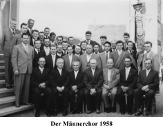
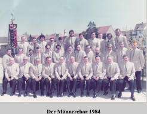

Historie
Vereinschronik




Vorsitz und Chorleitung im Lauf der Zeit
Vereinsvorsitzende
- 1859–1905nicht bekannt
- 1906–1910Johann Haupt
- 1911–1912Heinrich Weller
- 1913–1922Nikolaus Bäcker
- 1923–1928Jakob Rathgeber
- 1929–1932Georg Köhler II
- 1933–1939Heinrich Rathgeber
- 1946–1949Heinrich Rathgeber
- 1950–1963Peter Dörr
- 1964Fritz Schläfer
- 1965–1972Karl Theobald
- 1973–1977Dieter Rathgeber
- 1977–1987Karl Theobald
- 1988–2000Hermann Walk
- 2001–2007Arno Bernd
- 2007–2015Karl-Jürgen Oßwalt
- 2015–2022Oliver Deibel
- 2022–2024Tonja Loureiro
- 2024–2026Oliver Deibel
- seit 2026
Chorleitung des Männerchors und des gemischten Chors
- 1859–1906nicht bekannt
- 1906–1923Philipp Haupt
- 1924Daum (Lehrer im Ort)
- 1925–1926Volnhals
- 1926–1927Schneegans (Lehrer im Ort)
- 1928–1939Keidel (Kirchheimbolanden)
- 1946–1953Fritz Rathgeber
- 1954–1973Wilhelm Kuhn
- 1973–1996Emil Dinger
- 1996–1999Ortwin Sprenger (Ilbesheim)
- ab 2000Jürgen Knecht (Enkenbach-Alsenborn)
- 2024Auflösung des Männerchors und des gemischten Chors
Chorleitung des Kinder- und Jugendchors
- 2000–2005Alexandra Deibel
- 2006–2007Christa Franken-Feldner (Dannenfels)
- 2008–2009Sonja Degenhardt (Finkenbach)
- 2010–2022Alexandra Deibel
- 2023Carmen Reinhardt
- 2023–2026Alexandra Deibel
- seit 2026Carmen Reinhardt
Chorleitung von Friends of Music
- 2002–2022Alexandra Deibel
- 2023–2026Alexandra Deibel
- seit 2026